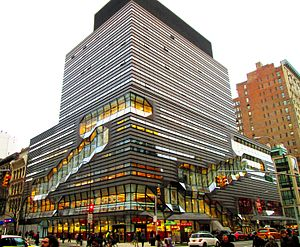

The New School
At a Glance

The New School is a progressive urban university where the walls between disciplines are dissolved, so that journalists can collaborate with designers, architects with social researchers, media specialists with activists, poets with musicians. at The New School, they will discover a unique form of creative problem solving that will forever change the way they investigate and create. They will learn to relentlessly question convention, collaborate across disciplines, and take risks. They will immerse themselves in a world of critical analysis and intense scholarship.
Manhattan, New York City
The New School is a private research university in Lower Manhattan, New York City, located mostly in Greenwich Village.Greenwich Village, often referred to by locals as simply "the Village", is a neighborhood on the west side of Lower Manhattan, New York City.Greenwich Village has been known as an artists' haven, the Bohemian capital, the cradle of the modern LGBT movement, and the East Coast birthplace of both the Beat and '60s counterculture movements. Groenwijck, one of the Dutch names for the village (meaning "Green District"), was Anglicized to Greenwich
Gnarls the Narwhal

Gnarls' urgent desire to solve pressing world problems was stoked by his classmates. He delved into performance classes like Vogue'ology, combining dance and social theory and challenging old ideas of "human realness." And in the course New School Eco-Mariners, he constantly bucked popular opinion, introducing his classmates to the concept of "marine mammal agency." His in-class screening of Blackfish, the controversial documentary on SeaWorld, won him respect among his peers and throughout their activist community. He now plans to further this cause with the growing social media campaign #mammalsunite. The New School, with its attention to all mammal rights, is a force of sustainability, recreation, and activism.
Citing